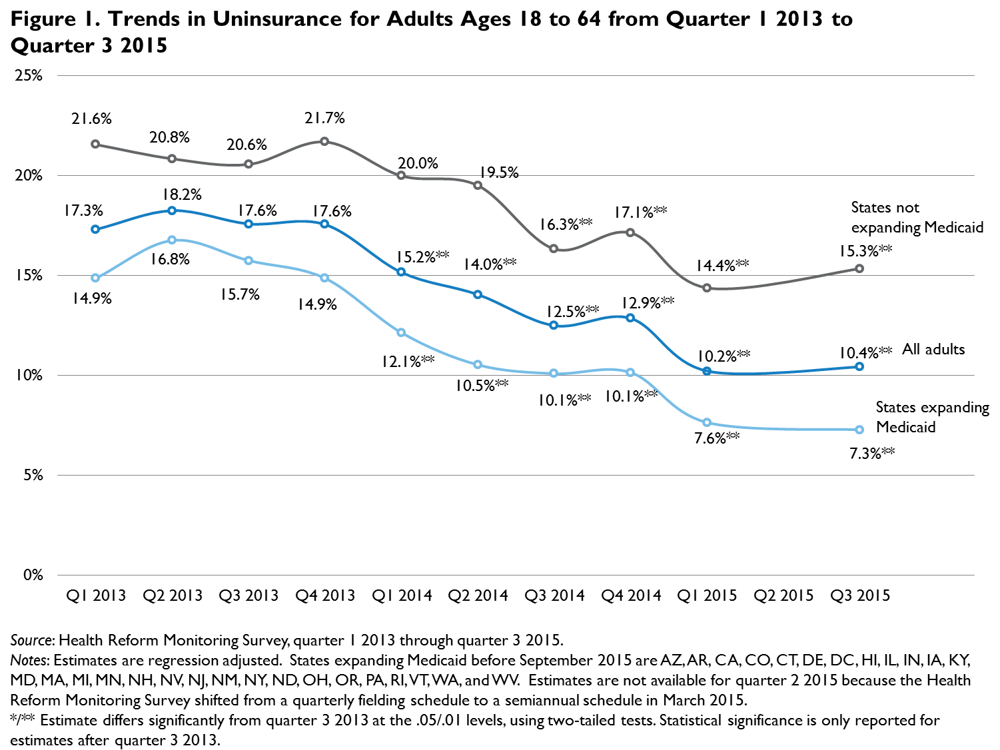

QuickTake: Taking Stock: Gains in Health Insurance Coverage under the ACA Continue as of September 2015, but Many Remain Uninsured
Michael Karpman and Sharon K. LongNovember 4, 2015
The Urban Institute has used its Health Reform Monitoring Survey (HRMS) to examine trends in health insurance coverage since the first quarter of 2013, providing timely information on the Affordable Care Act (ACA) before data from federal government surveys are available. An earlier brief drawing on HRMS data through March 2015 found that the share of nonelderly adults (ages 18 to 64) without coverage declined 42.5 percent between September 2013, just before the first open enrollment period for the health insurance Marketplaces established by the ACA, and March 2015, just after the second open enrollment period ended (Long, Karpman, Kenney, Zuckerman et al. 2015). More recently, data from the National Health Interview Survey and other federal and nonfederal surveys have provided additional evidence of coverage gains since implementation of major coverage provisions of the ACA (Cohen and Martinez 2015; Smith and Medalia 2015).1
In this analysis, we use HRMS data collected in September 2015 to provide updated estimates of the change in uninsurance since the period before key ACA coverage provisions were implemented. We focus on changes in uninsurance between September 20132 and September 2015 for nonelderly adults, overall and by state Medicaid expansion status, family income, age, race and ethnicity, and gender.3 We provide a 95 percent confidence interval (CI) for key estimates. As the Marketplaces prepare for the third open enrollment period, these estimates highlight the coverage expansions that have occurred and remaining challenges in reaching groups that continue to have higher rates of uninsurance.
The uninsurance rate for nonelderly adults fell from 17.6 percent to 10.4 percent between September 2013 and September 2015. The uninsurance rate among nonelderly adults fell 7.2 percentage points (95% CI [5.4, 8.9]), from 17.6 percent in September 2013 to 10.4 percent in September 2015, a decline of 40.7 percent (figure 1). Applying the 7.2 percentage-point decrease in the uninsurance rate to the estimated 2015 national population of nonelderly adults yields a net decline in uninsurance of 14.3 million (95% CI [10.8 million, 17.8 million]) adults during this period.4 This decline is not significantly different from the decline estimated through March 2015. Thus, these results suggest that the overall uninsurance rate for nonelderly adults was stable between the second and third Marketplace open enrollment periods.  Nonelderly adults in states that expanded Medicaid under the ACA experienced larger declines in uninsurance than adults in states that did not expand Medicaid. In the 29 states (including the District of Columbia) that had implemented the ACA’s Medicaid expansion before September 2015, the uninsurance rate fell from 15.7 percent in September 2013 to 7.3 percent in September 2015, a decline of 8.5 percentage points (95% CI [6.2, 10.8]). In the 22 states that did not expand Medicaid before September 2015,5 the uninsurance rate fell from 20.6 percent to 15.3 percent over the same period, a decline of 5.2 percentage points (95% CI [4.0, 6.4]). These represent decreases in uninsurance for expansion and nonexpansion states of 53.8 percent and 25.4 percent, respectively. The 3.3 percentage-point difference in the change in the uninsurance rate between these state groups was statistically significant at the 5 percent level.
We also found a statistically significant difference between the estimated 14.4 percent uninsurance rate in March 2015 and the estimated 15.3 percent uninsurance rate in September 2015 in nonexpansion states. Those results are consistent with reports of attrition from the federal Marketplace (which was relied upon by all but one nonexpansion state) by consumers who (1) were unable to verify their citizenship or immigration status and thus disenrolled, (2) dropped coverage following downward adjustments to their premium tax credit amounts caused by inconsistencies in their income data, or (3) had their coverage canceled because they did not pay their premiums.6 In states that implemented the Medicaid expansion, it is likely that some of those who dropped out of Marketplace coverage picked up Medicaid and thus maintained health insurance coverage.
Low- and middle-income adults targeted by ACA provisions and population subgroups with historically high uninsurance rates experienced large declines in uninsurance rates. Low-income adults targeted by the Medicaid expansion (i.e., those with family incomes at or below 138 percent of the federal poverty level [FPL]) and middle-income adults targeted by the Marketplace tax credits (i.e., those with family incomes between 139 and 399 percent of FPL) experienced decreases in uninsurance of 15.6 percentage points (95% CI [11.8, 19.3]) and 6.6 percentage points (95% CI [4.0, 9.1]), respectively, between September 2013 and September 2015 (figure 2). We also found significant changes in uninsurance across age, race and ethnicity, and gender categories, with the largest percentage-point declines in uninsurance among young adults ages 18 to 30 (10.1 percentage points; 95% CI [7.1, 13.1]), Hispanic adults (12.4 percentage points; 95% CI [8.5, 16.4]), and men (7.8 percentage points; 95% CI [5.8, 9.7]).
However, many of those adults still had high uninsurance rates in September 2015. As shown in table 1, the low-income adults’ and Hispanic adults’ uninsurance rates were more than twice as high as the overall average (23.0 and 23.5 percent, respectively, versus 10.6 percent). Further, although the overall levels of uninsurance differ in the expansion and nonexpansion states, that same pattern held: low-income and Hispanic adults had twice the average uninsurance rate in both types of state. Of particular concern, roughly one-third of low-income adults and Hispanic adults were uninsured in the nonexpansion states in September 2015, more than twice the rate for those groups in the expansion states.
Notably, some racial disparities in uninsurance have closed in states that expanded Medicaid before September 2015. Uninsurance rates as of September 2015 were not significantly different for white, non-Hispanic adults and nonwhite, non-Hispanic adults in expansion states (5.2 percent and 5.9 percent, respectively). In contrast, there remained a large gap in uninsurance between these groups in nonexpansion states.
What It Means
There has been an approximately 41 percent decrease in uninsurance among nonelderly adults between September 2013 and September 2015, with declines of 53.8 percent in states that expanded Medicaid before September 2015 and 25.4 percent in states that did not expand Medicaid. These findings suggest stability in coverage levels between the end of the second open enrollment period and the eve of the third open enrollment period, when uninsured adults have had fewer pathways to obtain coverage. For instance, uninsured adults would only have been eligible for subsidized Marketplace coverage if they experienced qualifying events that would enable them to obtain coverage during a special enrollment period.7 One possible exception to the stability in coverage is in states that did not expand Medicaid, in which the estimated uninsurance rate in September 2015 was higher than the estimate in March 2015.
Adults targeted by the key ACA coverage provisions and those with historically high uninsurance rates have experienced the largest percentage-point declines in uninsurance, but they still have higher uninsurance rates than their counterparts, highlighting ongoing challenges in connecting some adults with coverage. In particular, uninsurance remains much higher in the states that did not expand Medicaid before September 2015. Compared with the states that expanded Medicaid, uninsurance rates as of September 2015 in the nonexpansion states were more than twice as high overall (15.7 versus 7.3 percent): roughly one-third of low-income adults (32.6 percent) and Hispanic adults (34.4 percent) were uninsured in those states.
As the third open enrollment period begins, we find that about one-quarter (23.0 percent) of adults in the income range targeted by the Medicaid expansion and 9.8 percent of adults in the income range targeted by Marketplace premium tax credits remain uninsured. Though some middle-income adults may not be eligible for tax credits because they have an affordable offer of employer-sponsored coverage or may have determined that Marketplace coverage is unaffordable even with financial assistance, others may be unaware that they are eligible for such help (Shartzer et al. 2015). Continued reductions in the uninsurance rate may depend on raising awareness and targeted enrollment assistance among this pool of eligible uninsured adults. Further coverage gains during the third open enrollment period may also depend on Marketplaces’ success in targeting outreach and enrollment assistance toward adults who are young, have low or moderate incomes, or are Hispanic, a disproportionate share of whom remain uninsured even in Medicaid expansion states.8
Methods: Each round of the HRMS is weighted to be nationally representative. We use these weights and a regression adjustment9 to control for differences in the demographic and socioeconomic characteristics of the respondents across the different rounds of the survey. This allows us to remove any variation in insurance coverage caused by changes in the types of people responding to the survey over time rather than by changes in the health insurance landscape. The basic patterns shown for the regression-adjusted measures are similar to those based on simple weighted estimates. In presenting the regression-adjusted estimates, we use the predicted rate of uninsurance in each quarter for the same nationally representative population. For this analysis, we base the nationally representative sample on survey respondents from quarters 1 and 3 of 2014 and quarters 1 and 3 of 2015). We focus on statistically significant changes in uninsurance over time (defined as changes that are significantly different from zero at the 5 percent level or lower) and highlight changes relative to September 2013, just before the first open enrollment period for the Marketplaces began. We provide a 95 percent confidence interval for key estimates.
We made several changes to the design of the HRMS and our analytic approach in September 2015. In addition to shifting from a quarterly fielding schedule to a semiannual schedule after March 2015, we changed the sampling method. For the September 2015 round, we designed the survey to yield a sample of at least 2,000 adults in each of three income groups (at or below 138 percent of FPL, 139–399 percent of FPL, and at or above 400 percent of FPL) and two state groups (those that had expanded Medicaid as of January 2014 and those that did not expand Medicaid as of January 2014). Survey weights were adjusted to ensure estimates are representative of the national nonelderly adult population.
In September 2015, we also shifted to a more parsimonious regression model to better support subgroup analyses. Specifically, we collapsed detailed categories for some covariates and dropped some interaction terms. Given the switch to a semiannual survey, we now use data from quarter 1 and quarter 3 2014 and quarter 1 and quarter 3 2015 to predict uninsurance rates for the same nationally representative population rather than data from the most recent 12-month period. These changes had little effect on the regression-adjusted estimates.
Limitations: Though HRMS estimates capture the changes in insurance coverage from the first open enrollment period under the ACA, the estimates understate the full effects of the ACA because the estimates do not reflect the effects of some important ACA provisions that were implemented before 2013 (such as the ability to keep dependents on health plans until age 26 and early state Medicaid expansions). In addition, these change estimates do not reflect only the effects of the ACA, because they do not control for long-term trends in health insurance coverage that predate the ACA or changes in the business cycle. Further, the difference in coverage gains between states that expanded Medicaid and states that did not should not be entirely attributed to the ACA; there were other policy choices that likely affected enrollment. For example, many of the nonexpansion states did not set up their own Marketplaces and therefore did not get the same access to outreach and enrollment assistance funding.
References
Cohen, Robin A., and Michael E. Martinez. 2015. Health Insurance Coverage: Early Release of Quarterly Estimates from the National Health Interview Survey, January 2010-March 2015. Hyattsville, MD: National Center for Health Statistics.
Long, Sharon K., Michael Karpman, Genevieve M. Kenney, Stephen Zuckerman, Douglas Wissoker, Adele Shartzer, Nathaniel Anderson, and Katherine Hempstead. 2015. Taking Stock: Gains in Health Insurance Coverage under the ACA as of March 2015. Washington, DC: Urban Institute.
Long, Sharon K., Michael Karpman, Genevieve M. Kenney, Douglas Wissoker, Nathaniel Anderson, and Stephen Zuckerman. 2015. QuickTake: Taking Stock: Health Insurance Coverage under the ACA as of December 2014. Washington, DC: Urban Institute.
Long, Sharon K., Michael Karpman, Adele Shartzer, Douglas Wissoker, Genevieve M. Kenney, Stephen Zuckerman, Nathaniel Anderson, and Katherine Hempstead. 2014. Taking Stock: Health Insurance Coverage under the ACA as of September 2014. Washington, DC: Urban Institute.
Shartzer, Adele, Genevieve M. Kenney, Sharon K. Long, and Yvette Odu. 2015. A Look at Remaining Uninsured Adults as of March 2015. Washington, DC: Urban Institute.
Smith, Jessica C., and Carla Medalia. 2015. Health Insurance Coverage in the United States: 2014. Washington, DC: US Census Bureau.
State Health Access Data Assistance Center. 2013. Comparing Federal Government Surveys that Count the Uninsured. Princeton, NJ: Robert Wood Johnson Foundation.
About the Series
For more information on the HRMS and for other QuickTakes in this series, visit www.urban.org/hrms.
About the Authors
Sharon K. Long is a senior fellow and Michael Karpman is a research associate in the Urban Institute’s Health Policy Center.
Notes 1 Stephanie Marken, “U.S. Uninsured Rate at 11.6% in Third Quarter,” Gallup, October 8, 2015. 2 Although Marketplace coverage for people enrolling between October 2013 and December 2013 did not start until January 2014, some who signed up in the fall may have reported having coverage during the December 2013 HRMS survey. Further, some of those seeking coverage through the Marketplace between October 2013 and December 2013 were enrolled in Medicaid. 3 We focus on changes in insurance coverage because estimates of the level of coverage often vary across survey programs because of differences in the surveys that are unrelated to the ACA (State Health Access Data Assistance Center 2013). For this analysis, we focus on state decisions to expand Medicaid before September 1, 2015. The states that expanded Medicaid by this date are AZ, AR, CA, CO, CT, DE, DC, HI, IL, IN, IA, KY, MD, MA, MI, MN, NV, NH, NJ, NM, NY, ND, OH, OR, PA, RI, VT, WA, and WV. Several of those states, including CA, CT, DC, and MN, expanded Medicaid under the ACA before 2013. 4 To extrapolate our estimates of changes in uninsurance rates to the number of adults who have gained coverage over the same period, we use projections for the size of the 2015 population from the US Census Bureau. These files give population projections by race, ethnicity, and sex of all ages from 2014 to 2060 based on estimated birth rates, death rates, and net migration rates. Using the “Table 1” file (which has a 2015 projected population of 321,368,864), we summed the 2015 population projections for all 18-to-64-year-olds to arrive at 199,903,264 nonelderly adults in 2015. See US Census Bureau, “2014 National Population Projections: Downloadable Files,” US Department of Commerce, last modified December 10, 2014. Because we used population projections for 2014 in earlier briefs in this series, a small portion of the change in the estimated number of adults gaining coverage between those analyses and the current analysis reflects population growth. The estimated coverage gain between September 2013 and September 2015 would be about 103,000 fewer nonelderly adults if we applied the population projection used in Long et al. (2014) and about 72,000 fewer if we applied the projection used in Long, Karpman, Kenney, Wissoker et al. (2015). 5 The 22 states that did not expand Medicaid before September 2015 are AL, AK, FL, GA, ID, KS, LA, ME, MS, MO, MT, NE, NC, OK, SC, SD, TN, TX, UT, VA, WI, and WY. WI has extended Medicaid eligibility to adults with incomes at or below 100 percent of FPL. 6 According to the Centers for Medicare and Medicaid Services, 2015 coverage was cancelled as of June 30, 2015, for 423,000 enrollees in the federally facilitated Marketplace who did not provide sufficient documentation to verify their citizenship or immigration status. In addition, 967,000 households with 2015 coverage through the federally facilitated Marketplace have had their premium tax credit and/or cost-sharing subsidies adjusted because the income they provided on their application for coverage did not match income information in available tax data, and sufficient documentation was not provided to verify their income. Centers for Medicare and Medicaid Services, “June 30, 2015 Effectuated Enrollment Snapshot,” press release, September 8, 2015. See also Abby Goodnough, “Insurance Dropouts Present a Challenge for Health Law,” New York Times, October 11, 2015. 7The Center for Medicare and Medicaid Services reports that between February 23, 2015, and June 20, 2015, 944,000 individuals selected a plan through Healthcare.gov under a special enrollment period, half of whom were eligible for a special enrollment period because they lost their previous coverage. Centers for Medicare and Medicaid Services, “2015 Special Enrollment Period Report � February 23-June 30, 2015,” press release, August 13, 2015. 8 A portion of these uninsured adults are ineligible to enroll in Medicaid or through the Marketplace because they are undocumented immigrants. 9 Specifically, we control for the variables used in the poststratification weighting of the KnowledgePanel (the internet-based survey panel that underlies the HRMS) and the poststratification weighting of the HRMS. These variables are sex, age, race and ethnicity, language, education, marital status, whether any children are present in the household, household income, family income as a percentage of FPL, homeownership status, Internet access, urban or rural status, and census region. In this analysis, we also control for citizenship status and participation in the previous quarter’s survey (i.e., whether the responded completed survey in the previous quarter, was sampled in the previous quarter but did not complete survey, or was not sampled in the previous quarter).
|
|||||||||||||||||||||||||||||||||||||||||||||||||||||||||||||||||||||||||||||||||||||||||||||||||||||||||||||||||||||||||||||||||||||||||||||||||||||||||||||||||||||||||

 |
 |
 |